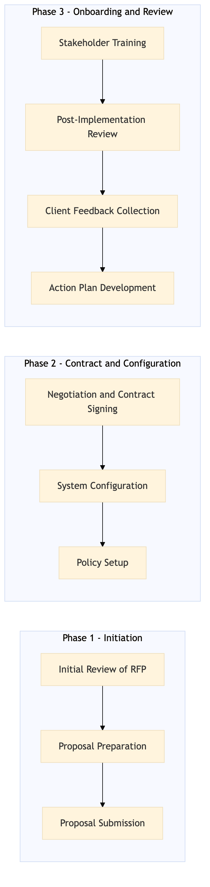

This process document outlines the steps for responding to a Request for Proposal (RFP) from a corporate account and onboarding the new client within the TMC Travel Programme Management domain.
| Trigger | Receiving an RFP from a corporate account |
| Outcome | Successful onboarding of the corporate account with a fully configured travel programme, including policy setup, system integration, and training for key stakeholders. |
| Systems | Salesforce Tableau Analytics Cloud Concur T2 Concur Expense Amex GBT Neo/Complete Amadeus GDS S/4HANA |

Click to enlarge
| Step | Name & Pain Point | Role | System | Input | Output | KPI | Flags |
|---|---|---|---|---|---|---|---|
| 1.1 | Initial Review of RFP Complex RFP requirements | TMC Account Manager | Salesforce | RFP document | RFP analysis report | Time to complete initial review within 2 business days | ⚠ Exception |
| 1.2 | Proposal Preparation Data-driven insights for proposal | TMC Business Analyst | Tableau, Analytics Cloud | RFP analysis report | Customized proposal document | Time to prepare proposal within 3 business days | ⚠ Exception |
| 1.3 | Proposal Submission Timely communication with client | TMC Account Manager | Salesforce, Email | Customized proposal document | Proposal submission confirmation | Time to submit proposal within 1 business day | ⚠ Exception |
| 2.1 | Negotiation and Contract Signing Negotiation delays | TMC Account Manager, Legal Team | Salesforce, Email, DocuSign | Client feedback on proposal | Signed contract document | Time to sign contract within 5 business days post-proposal submission | ◆ Decision⚠ Exception |
| 2.2 | System Configuration System integration issues | TMC IT Specialist, TMC Business Analyst | Concur T2, Concur Expense, Amex GBT Neo/Complete, Amadeus GDS, S/4HANA | Signed contract document | Configured travel programme in TMC systems | Time to complete system configuration within 10 business days post-contract signing | ⚠ Exception |
| 2.3 | Policy Setup Policy compliance issues | TMC Business Analyst, TMC Policy Specialist | Concur Expense, Amex GBT Neo/Complete, S/4HANA | Corporate travel policy guidelines | Configured travel policies in TMC systems | Time to complete policy setup within 5 business days post-system configuration | ⚠ Exception |
| 3.1 | Stakeholder Training Stakeholder engagement | TMC Training Specialist, TMC Account Manager | Salesforce, Email, Zoom | Configured travel programme and policies | Training completion certificates for key stakeholders | Time to complete training sessions within 2 business days post-policy setup | ⚠ Exception |
| 3.2 | Post-Implementation Review Identifying areas for improvement | TMC Account Manager, TMC Business Analyst | Salesforce, Tableau, Analytics Cloud | Training completion certificates | Post-implementation review report | Time to complete post-implementation review within 1 business day post-training | ⚠ Exception |
| 3.3 | Client Feedback Collection Low response rates | TMC Account Manager, TMC Client Success Team | Salesforce, Email, SurveyMonkey | Post-implementation review report | Client feedback survey results | Time to collect client feedback within 1 business day post-review | ⚠ Exception |
| 3.4 | Action Plan Development Prioritizing client requests | TMC Account Manager, TMC Business Analyst | Salesforce, Tableau | Client feedback survey results | Action plan document | Time to develop action plan within 2 business days post-feedback collection | ⚠ Exception |